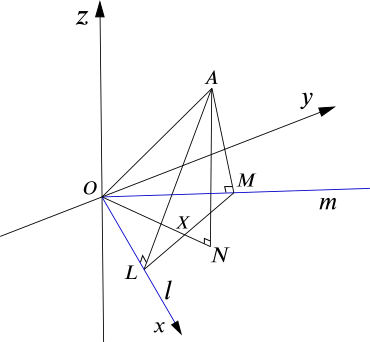

The straight lines l and m intersect at the origin O, and their directions are parallel to i and i+2j respectively. The point A has position vector OA−→− given by 2i+3j+5k. The point L on l is such that OL−→ is the projection of OA−→− on l, and the point M on m is such that OM−→− is the projection of OA−→− on m. State the position vector of L, and show that OM−→−=85i+165j.

Since l is parallel to i (or the x-axis), the vector OL−→ is the i-component of OA−→−. So the position vector of L is 2i.
The point M is on m, so its position vector can be written as μ(i+2j) for some number μ. Since it is the projection, it follows that m and AM−→− are perpendicular. In other words, their dot product is zero.
(i+2j).((μ−2)i+(2μ−3)j−5k)⟹(μ−2)+2(2μ−3)⟹μ=0=0=85
So OM−→−=85i+165j as required.
Calculate the angle MAL, giving your answer correct to the nearest degree.
We require the angle between the vectors AM−→− and AL−→ and we can find this using the dot product.